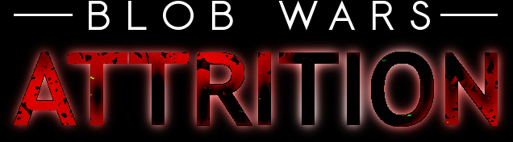
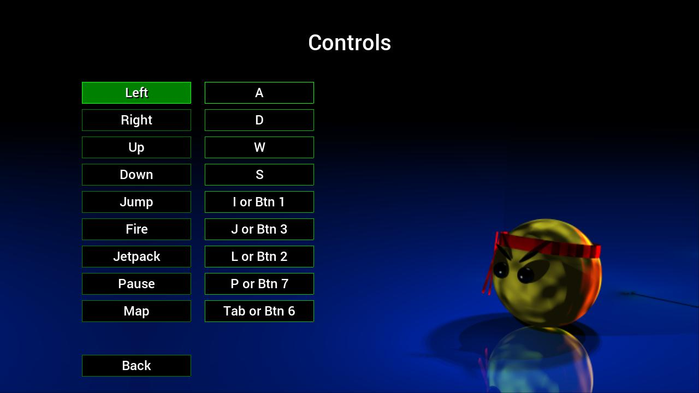
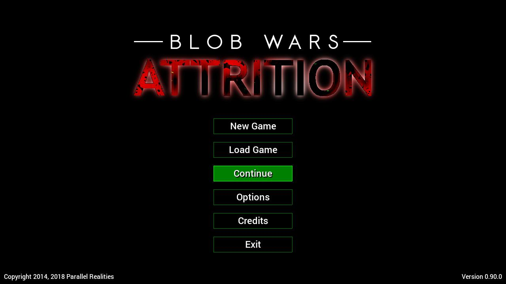
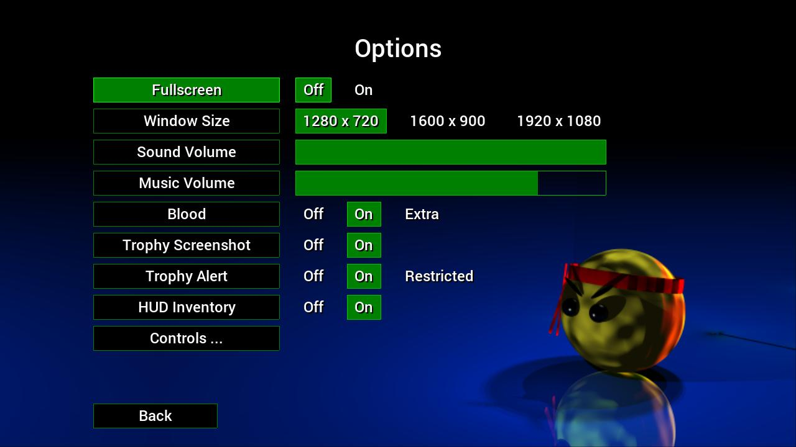

Gameplay Manual
Last updated: 2nd April 2018
Table of Contents
Introduction
Blob Wars : Attrition is a mission and objective-based 2D platformer. It is the third entry in the Blob Wars series and is set between the events of Metal Blob Solid and Blob and Conquer. The story centres around an alien invasion of the Blobs' homeworld and their fight back against the aggressors. Many of Bob's fellow blobs have been assimilated by alien technology and become evil. During the game, you take control of a blob named Bob, whose mission it is to rescue MIA and fight back against the enemy. The gameplay is non-linear, allowing the player to tackle missions in any order they like.
Quick Start Guide
To quickly start playing the game:
- Run the Blob Wars executable (./blobWarsAttrition on Linux, blobWarsAttrition.exe) on Windows).
- Choose New Game and select a save slot.
- On the world map screen, use the mouse or keyboard control to select the Beach Approach tutorial mission.
- Play and complete the training mission to proceed with the game (or quit the mission to proceed more quickly).
Controls
Gameplay
Most missions in the game feature mulitple objectives which are listed at the start of the level. Those objectives listed in red are required to be completed. Those listed in white are optional and can be completed at any other time. Once all the objectives have been completed, the mission will automatically end and the player will be returned to the World Map. They can then choose to return to the mission again, to complete all the outstanding objectives and collect keys that they missed before.

- Health, Power, Oxygen, and Weapon
- Inventory
- Bob (the player)
- An enemy Blob
- An enemy EyeDroid
Bob starts the game with 10 health points, which are depleted as he takes damage. When Bob's health is reduced to 0, he is killed and the mission is failed. Picking up cherries will help to regain health (see further below for more information). Bob also has a power level, that is used by both the aqua lung and jetpack. This can be replemished by picking up batteries (see further below for more information). It also naturally regenerates over time.
Weapons
A number of weapons are at Bob's disposal:
- Pistol: Bob's starting weapon. Slow to fire, but unlike all the rest can be used underwater.
- Plasma Rifle: A rapid-firing gun that does slightly more damage than other guns in the game.
- Spread Gun: Fires three shots in a spread effect. Most useful in wide open spaces and for hitting enemies that are slightly out of reach.
- Laser: Cuts through enemies and bounces off walls Causes tremendous amounts of damage.
- Grenades: Bounce and explode on contact with enemies. Causes plenty of damage (some enemies, such as cannons, are immune to the explosion).
Cherries and Batteries
Cherries and batteries restore Bob's health and power respectively. Each come in different sizes, topping up the health and power by different amounts. A small cherry and a weak battery will refill Bob's gauges a small amount, while a bunch of berries and a full battery will restore much more. You should collect cherries and batteries as often as you can, to keep your health and power as high as possible.
Flying and Swimming
From the start of the game, Bob is equipped with a jetpack and aqualung. When activated, the jetpack will allow Bob to fly for a short period of time, allowing him to reach higher and more distant areas. The jetpack draws on power reserves when it is activated and will automatically cut out once the power levels reach 0. When in water, Bob can swim. Swimming will slowly reduce his oxygen levels. Once the level reaches 0, Bob's health will rapidly decrease. Getting out of the water will regenerate Bob's O2 levels. Bob can also activate his aqualung to swim for longer. The aqualung will draw on Bob's power reserves and will cut out as soon as the power levels reach 0.
Keys
Keys and keycards to open doors can be found scattered throughout the missions in Attrition. Spare keys not used in a level are carried between levels once the mission ends (or the player quits). This is important, as not all the doors on one level will have a matching key. For example, a level might contain two gold doors, but only one gold key. In this instance, the player would need to find a gold key on another level.
Water, Slime, and Lava
Water, slime, and lava are present in the Blobs' world. While Bob can swim in water and not suffer any ill effects (aside from drowning, if his oxygen runs out), slime and lava will reduce Bob's health if he falls in it. Slime will reduce Bob's health by 1 point, while lava will remove 2 points of health. Both should be avoided.
Hearts and Cells
Hearts and cells are special items that will increase Bob's maximum health and power by 1 point each. These items are unique and can be found in most levels in the game. Upon collecting a heart or cell, Bob's health or power will be immediately increased and restored to the new maximum. Hearts and cells are often in difficult to reach or out-of-the-way areas. Even so, you should make an effort to find them as quickly as possible as the increases in health and power will aid Bob immensely on his quest.
Controls
Title Screen

The title screen offers a range of options.
- New Game: starts a new game. You will need to choose a save slot to use. A warning will be shown if you chose an existing save slot, as all of the data will be overwritten.
- Load Game: choose a save game to load. The save slots will display the percentage of the game complete and the time played (in hours and minutes).
- Continue: quickly continue playing the most recently saved game.
- Options: view and configure the game's options. See the Options section for more information.
- Credits: view the game's credits.
- Exit: exit the game.
Hub / World Map
Main Mission
Objectives / Inventory
At any time during gameplay, pressing Pause will display the mission's current objectives, as well as their progress. It will also display the inventory, showing items carried. Required objectives are displayed in red, completed objectives in green, and other objectives (non-required) in white. Bob may carry up to 14 items (keys only occupy one inventory slot, their numbers stacking). There is no way for Bob to drop items that he is carrying, other than to use them.
- A completed objective
- An incomplete (required) objective
- Incomplete optional objectives
- Inventory
Radar
Ending the Game
If Bob loses all his health, the mission is failed. At this point, you will have the option to restart the mission or return to the hub. Restarting the mission will reset everything to the way it was when the mission began; keys, items, etc. will be reset to their previous state, including the player's inventory and health bonuses. In the case of a new mission, this will mean restarting from the beginning. If returning to the mission, the player will restart from that point.
Once all missions have been completed, the player will have the option to continue the game in Free Play mode. They may play any mission they like, at any time. The state of the mission will not be saved, however.
Options
Hints and Tips
License
Please refer to the LICENSE and README.md files that came with this game for information on the various copyrights of the source code, graphics, sound, and data. Additionally, you may visit https://github.com/stephenjsweeney/blobwarsAttrition to get the source code itself, and view the files there.
About
Blob Wars : Attrition is a port of the Android game of the same name. It is the third game in the Blob Wars series of games, that began in 2002.